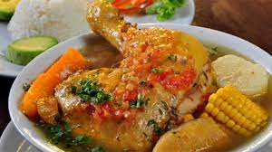

plato tipico que no puede faltar en la mesa de ningun colombiano no importa la hora del dia
Muchos creen que el primer plato de este guiso espeso se sirvió por primera vez en las Islas Canarias, un archipiélago español frente a la costa de África. Se convirtió en el festival de viandas y carne que es hoy después de la colonización española de América Latina y el Caribe.
